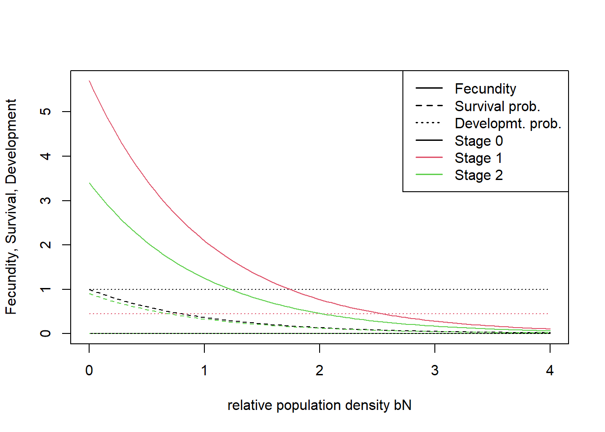
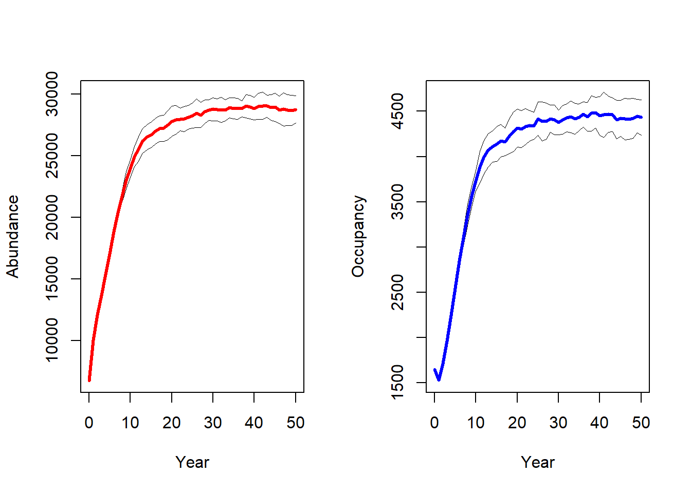
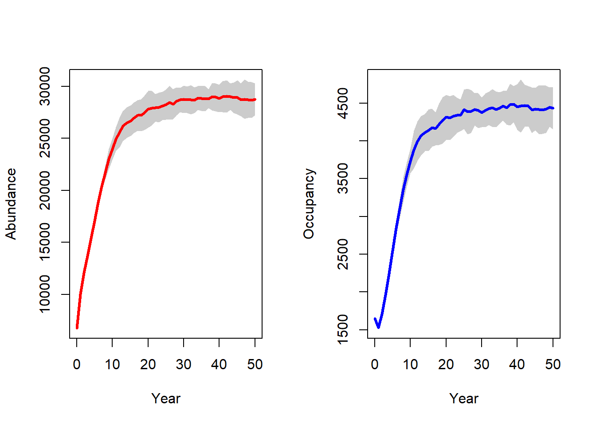
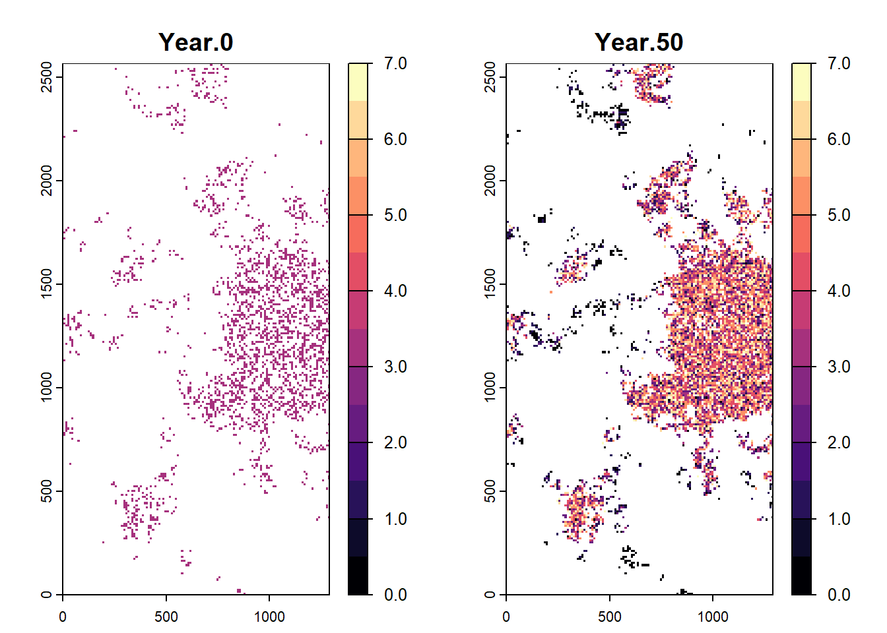

In this overview, we quickly go through the main functionality of the RangeshiftR R-package in order to get a first overview of the basic structure.
Within the standard workflow of RangeshiftR, a simulation is defined by:
The standard workflow of RangeshiftR is to load input maps from ASCII files and to write all simulation output into text files. Therefore, the specified working directory needs to have a certain folder structure: It should contain 3 sub-folders named ‘Inputs’, ‘Outputs’ and ‘Output_Maps’.
Load the package by typing:
library(RangeshiftR)Create a parameter master object with all the default settings and store it:
s <- RSsim()If you have already created a suitable directory for your simulation on your disc, store its path in a variable. This can either be the relative path from your R working directory or the absolute path.
dirpath = "Overview/"Create the RS folder structure, if it doesn’t yet exist:
dir.create(paste0(dirpath,"Inputs"), showWarnings = TRUE)
dir.create(paste0(dirpath,"Outputs"), showWarnings = TRUE)
dir.create(paste0(dirpath,"Output_Maps"), showWarnings = TRUE)With this, we are already set to run our first simulation by typing:
RunRS(s,dirpath)## Checking Control parameters
##
## Control Parameters checked
##
## Run Simulation(s) with random seed ...
##
## Running simulation nr. 1
##
## starting replicate 0
## RunModel(): completed initialisation
## starting year 0...
## starting year 1...
## starting year 2...
## starting year 3...
## starting year 10...
## starting year 20...
## starting year 30...
##
## starting replicate 1
## RunModel(): completed initialisation
## starting year 0...
## starting year 1...
## starting year 2...
## starting year 3...
## starting year 10...
## starting year 20...
## starting year 30...
##
## ***** Elapsed time: 3 seconds
##
## *****
## ***** Simulation completed
## ***** Outputs folder: ../Tutorials/Overview/Outputs/
## *****## $Errors
## [1] 0You should find the generated output - the simulation results as well as some log files - in the ‘Outputs’ folder.
To look at the parameter master in more detail, simply type:
s## Simulation # 1
## -----------------
## Replicates = 2
## Years = 50
## Absorbing = FALSE
## File Outputs:
## Range, every 1 years
## Populations, every 1 years, starting year 0
##
## Artificial landscape: random structure, binary habitat/matrix code
## Size : 65 x 65 cells
## Resolution : 100 meters
## Proportion of suitable habitat: 0.5
## Carrying capacity : 10
##
## Demography:
## Unstructured population:
## Rmax : 1.5
## bc : 1
## Reproduction Type : 0 (female only)
##
## Dispersal:
## Emigration:
## Emigration probabilities:
## [,1]
## [1,] 0
##
## Transfer:
## Dispersal Kernel
## Dispersal kernel traits:
## [,1]
## [1,] 100
## Constant mortality prob = 0
##
## Settlement:
## Settlement conditions:
## [,1]
## [1,] 0
## FindMate = FALSE
##
## Initialisation:
## InitType = 0 : Free initialisation
## of all suitable cells/patches.
## InitDens = 1 : At half carrying capacity K/2It contains of a number of parameter modules that each define different aspects of the RangeShifter simulation. Specifically, there are:
Here is a schematic overview of the module constructors and their relations:
In the following, we go through some of the most relevant aspects of each module.
This module is used to set general simulation parameters (e.g. simulation ID, number of replicates, and number of years to simulate) and to control output types (plus some more specific settings). For this overview, we will stick to the defaults:
sim <- Simulation(Simulation = 2,
Years = 50,
Replicates = 2,
OutIntPop = 50)For detailed information on this module (or any other), please see the documentation.
?SimulationRangeShifter can either import a map from an ASCII file in the ‘Inputs’ folder or generate a random map to use in the simulation.
For each option, there is a corresponding function to create a Landscape parameter object
land <- ImportedLandscape()
land <- ArtificialLandscape()Imported landscapes can provide either (binary or continuous) habitat suitability or land type codes. Furthermore, they can be either patch- or cell-based. We cover both types of landscapes in the remaining tutorials.
Artificially generated landscapes can only contain (binary or continuous) habitat suitability and are always cell-based.
For our example, we define an artificial landscape:
land <- ArtificialLandscape(Resolution = 10, # in meters
K = 1500, # ~ 15 inds/cell
propSuit = 0.2,
dimX = 129, dimY = 257,
fractal = T, hurst = 0.3,
continuous = F)The Demography module contains all the local population dynamics of your simulated species. Generally there are two types:
For the first case, create a simple Demography module (the maximum growth rate Rmax is the only required parameter)
demo <- Demography(Rmax = 2.2, ReproductionType = 1, PropMales = 0.45)The option ReproductionType determines the way that different sexes are considered:
0 = asexual / only female model
1 = simple sexual model
2 = sexual model with explicit mating system
In order to make a stage-structured model, we have to additionally create a stage-structure sub-module within the Demography module. Here, we have already defined a Demography object and can use ‘+’ to add the StageStructure sub-module.
stg <- StageStructure(Stages = 3,
TransMatrix = matrix(c(0,1,0,5.7,.5,.4,3.4,0,.9),nrow = 3),
FecDensDep = T,
SurvDensDep = T)
demo <- demo + stgAlternatively, we define the sub-module within the Demography module:
demo <- Demography(StageStruct = stg, ReproductionType = 1, PropMales = 0.45)RangeshiftR provides a number of useful functions to explore the model set-up. For example, we can plot the rates from the transition matrix:
plotProbs(stg)
The dispersal process is modelled wih three sub-processes (see the schematic figure above): Emigration, Transfer and Settlement.
disp <- Dispersal(Emigration = Emigration(EmigProb = 0.2),
Transfer = DispersalKernel(Distances = 50),
Settlement = Settlement() )We can use the function plotProbs() to plot verious functional relationships, for example a dispersal kernel with stage-dependent mean distance:
plotProbs(DispersalKernel(Distances = matrix(c(0,1,2,70,50,30),nrow = 3), StageDep = T))This is using mostly default options. For example, we can change the settlement condition so that a female individual, that arrives in an unsuitable cell, will wait for another time step and disperse again, while the males will die if arriving in an unsuitable cell:
disp <- disp + Settlement(SexDep = T,
Settle = matrix(c(0,1,1,0), nrow = 2))The dispersal traits of every phase can be set to vary between individuals (IndVar = TRUE). This also makes the dispersal traits heritable and thus allows for evolution, for example, evolving emigration probability:
disp2 <- disp + Emigration(IndVar = TRUE,
EmigProb = matrix(c(.7,.1), nrow = 1),
MutationScales = c(.1))The genetics module controls the heritability and evolution of traits and is needed if inter-individual variability is enabled (IndVar = TRUE) for at least one dispersal trait.
gene <- Genetics(NLoci = 3, ProbMutn = .05)In order to control the initial distribution of individuals in the landscape at year 0, we set initialisation rules. We choose to initialise 3 individuals per habitat cell. Additionally, since we define a stage-structured model, we have to specify the initial proportion of stages:
init <- Initialise(FreeType = 0,
NrCells = 2250,
InitDens = 2,
IndsHaCell = 3,
PropStages = c(0,0.7,0.3))
init## Initialisation:
## InitType = 0 : Free initialisation
## of 2250 random suitable cells/patches.
## InitDens = 2 : 3 individuals per cell/hectare
## PropStages = 0 0.7 0.3
## InitAge = 2 : Quasi-equilibriumAfter all settings have been made in their respective modules, we are ready to combine them to a parameter master object, which is needed to run the simulation.
s <- RSsim(simul = sim, land = land, demog = demo, dispersal = disp, gene = gene, init = init)
# Alternative notation:
# s <- RSsim() + land + demo + disp + sim + init + geneWe can check the parameter master (or any single module) for potential parameter conflicts:
validateRSparams(s)## [1] TRUEOnce the parameter master has been defined, we can run the simulations in the specified RS directory.
RunRS(s, dirpath)All results are stored in the Outputs folder. RangeshiftR provides some in-built functions to access and plot these results. Here, we plot the abundance and occupancy timeseries:
range_df <- readRange(s, dirpath)
# ...with replicates:
par(mfrow=c(1,2))
plotAbundance(range_df)
plotOccupancy(range_df)
# ...with standard deviation:
par(mfrow=c(1,2))
plotAbundance(range_df, sd=T, replicates = F)
plotOccupancy(range_df, sd=T, replicates = F)
Although RangeshiftR provides a number of functions for easy post-processing and plotting of results, it may also be desirable to further process the results yourself. As a simple example for such a workflow, let’s plot the spatial distribution of abundance. For doing so, we load the data from the population output files and process it using the raster package:
# read population output file into a dataframe
pop_df <- readPop(s, dirpath)
# Not all years have the same number of populated and thus listed cells. For stacking, we set a common extent with the values used in the landscape module:
ext <- c(0,1290,0,2570)
res <- 10
# Make stack of different raster layers for each year and for only one repetition (Rep==0):
pop_wide_rep0 <- reshape(subset(pop_df,Rep==0)[,c('Year','x','y','NInd')], timevar='Year', v.names=c('NInd'), idvar=c('x','y'), direction='wide')
# use raster package to make a raster from the data frame
library(raster)
stack_years_rep0 <- rasterFromXYZ(pop_wide_rep0)
names(stack_years_rep0) <- c('Year.0', 'Year.50')
spplot(stack_years_rep0, zlim = c(0,7))